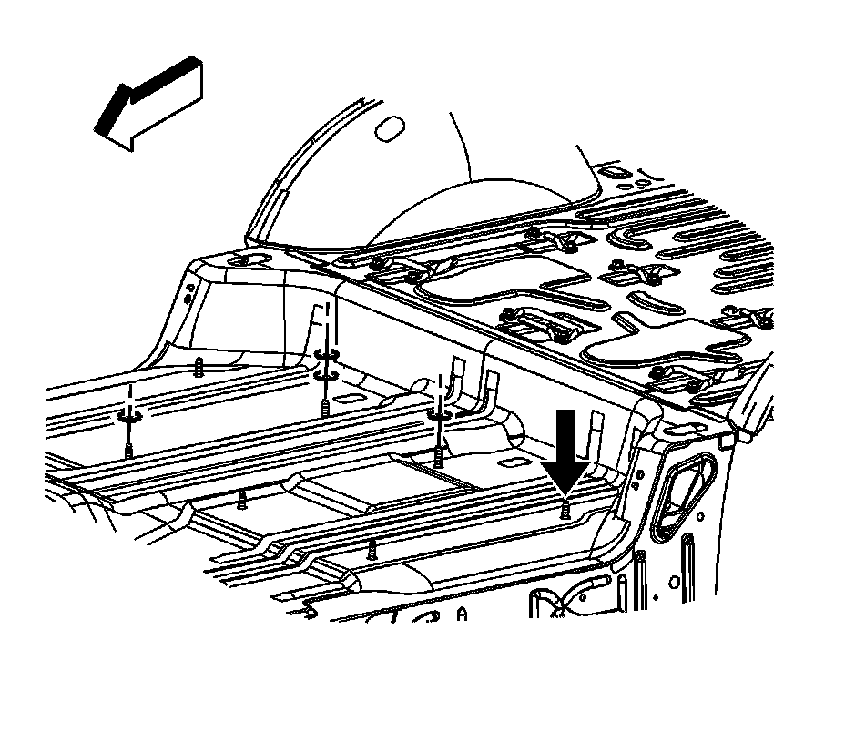
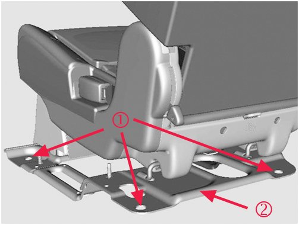

Interior - 2nd Row Seat Rattles/Hard To Latch/Unlatch
TECHNICALBulletin No.: 07-08-50-022B
Date: February 20, 2012
Subject: Seat Rattle and/or Hard to Latch and Unlatch, Power Release Fold and Tumble Not Fully Functioning (Perform Repair as Outlined)
Models:
2007-2012 Cadillac Escalade, Escalade ESV
2007-2012 Chevrolet Suburban, Tahoe
2007-2012 GMC Yukon, Yukon XL, Yukon Denali, Yukon Denali XL
Supercede:
This bulletin is being revised to add model years and update the Correction information. Please discard Corporate Bulletin Number 07-08-50-022A (Section 08 - Body and Accessories).
Condition
Some customers may comment on the following conditions with the second row seat:
- When using the power release fold and tumble function, if equipped, the seat will fold but will not tumble or raise forward.
- When releasing the seat latches manually to tumble or raise the seat, the latches may be difficult to release.
- When lowering the seat, the latches may be difficult to fully secure.
- A rattle may occur from the seat when driving over bumps.
Cause
The condition may be caused by the floor being slightly lower in one corner of the second row seat mounting area, possibly affecting the alignment of the seat latches and the seat base plate.
Correction

Inspect the second row seat for proper operation/latching, and adjust carpet fit and/or adjust leveling of the seat spacer plate to correct striker to latch fit, as necessary.
1. Place the affected seat into the tumbled, or raised, position.
2. Verify that the seat latches on the bottom of the seat are fully opened.
3. Slowly lower the seat to rest the latches on the strikers; Do Not allow the seat to latch. Observe the seat latches to mating strikers for even contact or gap.
4. If there is even contact and no gap between the latches and strikers, observe the carpet for signs of not being fully seated, or being improperly installed. Mispositioned carpet may possibly hinder full motion of the latches down onto the strikers.
5. Correct any conditions that may be caused by the carpet, then retest seat latch function.
6. If a gap Is present between one of the latches and the mating striker, measure the vertical gap.

Important
For any mounting stud location (1) requiring spacer washers, ensure a minimum of three threads of the stud will be exposed once the nuts have been tightened to specification.
7. Determine the appropriate number of spacer washers required to adjust the seat riser plate (2) to be level:
- If the latch to striker gap is 3 mm (0.118 in) or less, add one washer.
- If the gap is greater than 3 mm (0.118 in), add two washers.
8. Remove the floor covering.
Note
It is possible that depending on the floor pan, spacer washers might be needed at one of the forward stud locations as well as, or instead of, at a rear location.
9. Remove all the seat mounting nuts and lift the seat assembly to add the spacer washers to the appropriate mounting stud nearest the striker which had a gap to the latch.
10. Reinstall the seat.
11. Reinstall the nuts.
Tighten
Tighten the nuts to 45 Nm (33 lb ft).
Important
There must always be a minimum of 3 exposed threads of the stud past the end of the nut once it is fully seated and tightened to specification.
12. Verify proper seat operation by completing the following steps:
1. Cycle the seat to be fully latched, then release the latches and move the seat to the tumbled, or raised position.
2. Cycle the seat to be fully latched, then operate the seat to verify that it can be manually released, and power released if equipped, without any binding.
3. If the seat still exhibits binding while releasing the seat latches, repeat the latch to striker inspection steps. If the latches still exhibit a gap, it may be necessary to adjust locations and/or quantity of the spacer washers; possibly including using the forward stud locations as needed to level out the seat riser plate.
13. Once proper seat operation is verified, reinstall the floor covering.
14. Re-verify proper seat operation with the carpet installed.
Parts Information
Warranty Information
For vehicles repaired under warranty, use the table.

Disclaimer